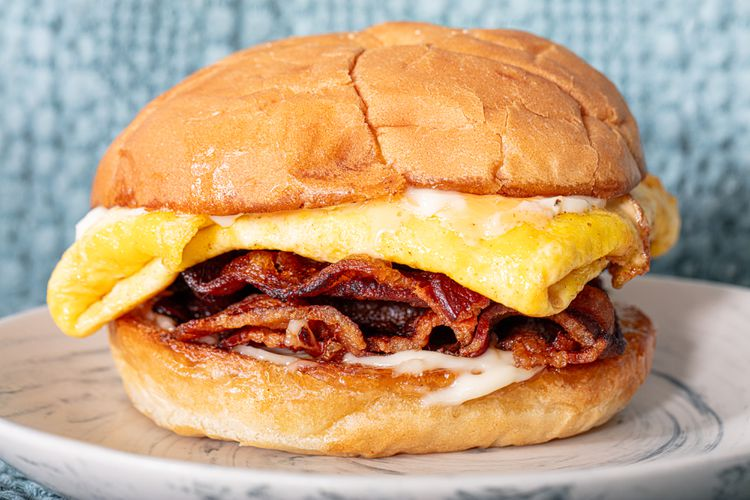

Bacon Egg and Cheese

Description
Whether you get yours at a deli, from a coffee shop, or just make it at home, the bacon, egg, and cheese sandwich checks all the boxes:
Protein, fat, carbs. Salty, rich, gooey, crispy. And above all, a good BEC is deeply satisfying—a welcome cure for everything from a hangover to heartbreak.
Ingredients
- Eggs
- Bacon
- American Cheese
- Roll of Bread
- Butter
- Optional: Condiments
Steps
- Toast the roll
- Add three strips of bacon to the pan and cook until golden brown
- As the bacon completes cooking, add two whipped eggs to another pan
- As the eggs near completion (fluffy yellow), add a slice of American cheese on top
- Assemble completed sandwich, and add favorite condiments